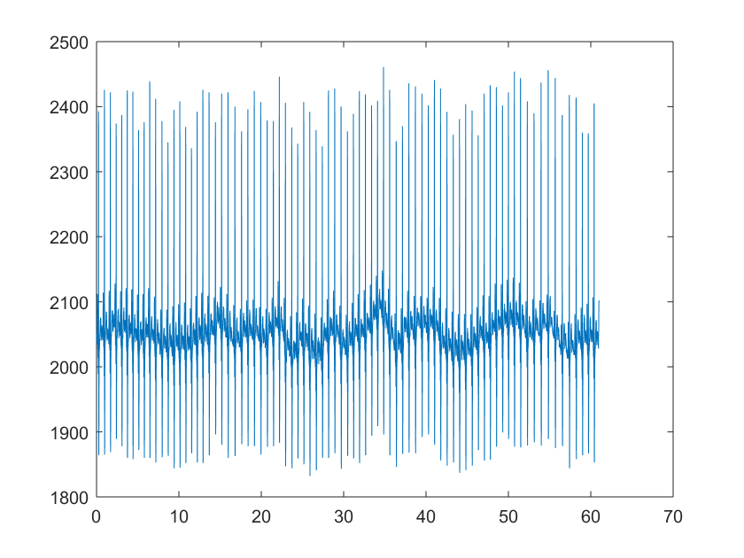
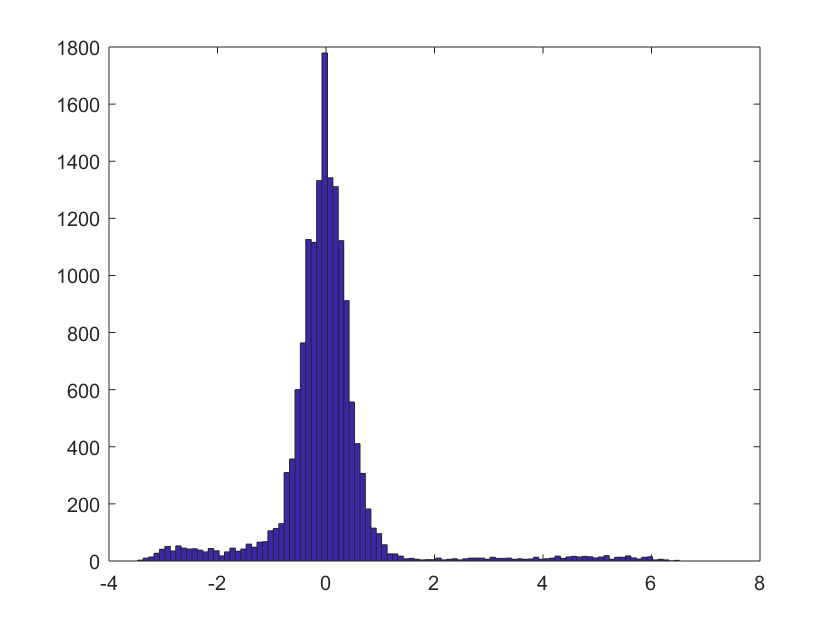
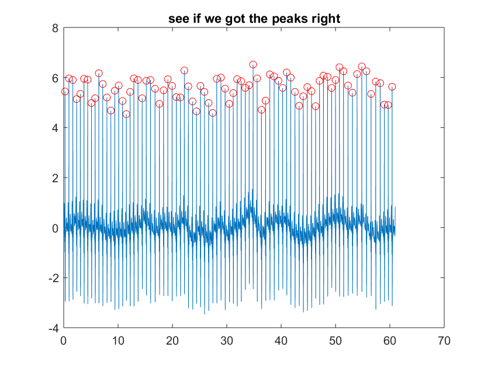
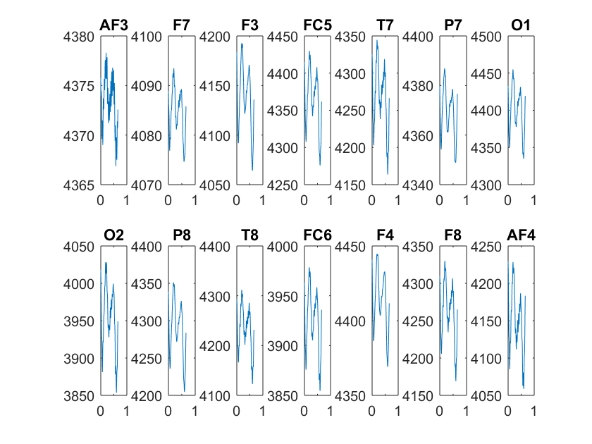

Contents
load('C:\Users\dmarinaz\Documents\code\DREAMER\DREAMER.mat')
ecg=cell2mat(DREAMER.Data{1,1}.ECG.baseline(1));
ecg(:,2)=[];
ECG_srate=DREAMER.ECG_SamplingRate;
time_ECG=(0:length(ecg)-1)/ECG_srate;
figure;plot(time_ECG,ecg)

now let's detect R peaks
x=zscore(ecg);
figure;hist(x,100);
[pks,locs] = findpeaks(x,ECG_srate,'MinPeakDistance',.4,'MinPeakHeight',3);
figure;plot(time,x);hold on;scatter(locs,pks,'r');title('see if we got the peaks right')
IBI=diff(locs);
min_IBI=min(IBI);
n_epochs=length(locs)-1;
eeg=cell2mat(DREAMER.Data{1,1}.EEG.baseline(1));
[npoints, nchan]=size(eeg);
EEG_srate=DREAMER.EEG_SamplingRate;
epoch_length=floor(min_IBI*EEG_srate);
time_EEG=(0:length(eeg)-1)/EEG_srate;
 
extract the epochs
HB_points=ceil(locs*EEG_srate);
HR_EEG_epochs=zeros(nchan,epoch_length,n_epochs);
for i_epochs=1:n_epochs
HR_EEG_epochs(:,:,i_epochs)=eeg(HB_points(i_epochs):HB_points(i_epochs)+epoch_length-1,:)';
end
avg_HRP=squeeze(mean(HR_EEG_epochs,3));
time_epoch=(0:epoch_length-1)/EEG_srate;
figure;
for i_chan=1:14
subplot(2,7,i_chan);plot(time_epoch,avg_HRP(i_chan,:));title(DREAMER.EEG_Electrodes{i_chan});
end
